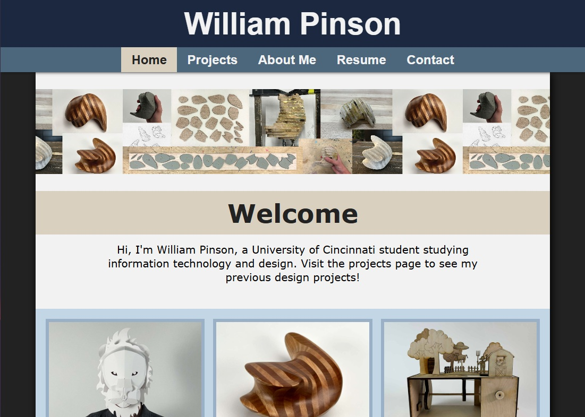
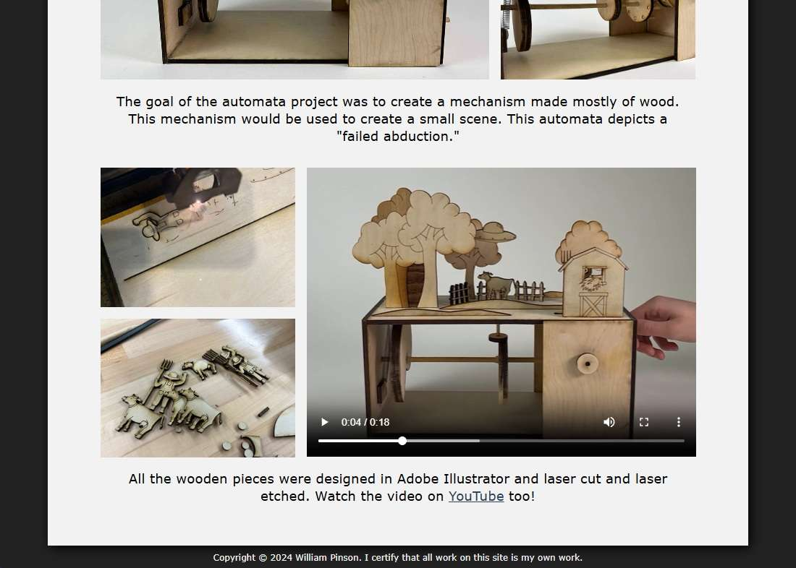
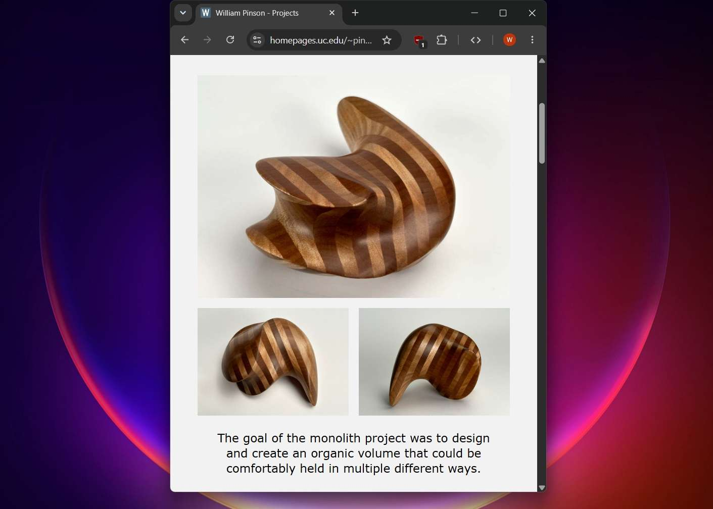
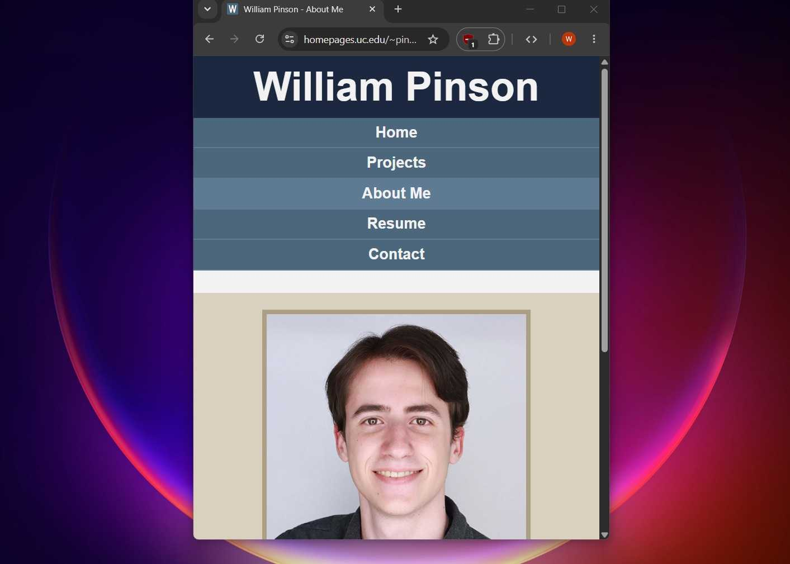
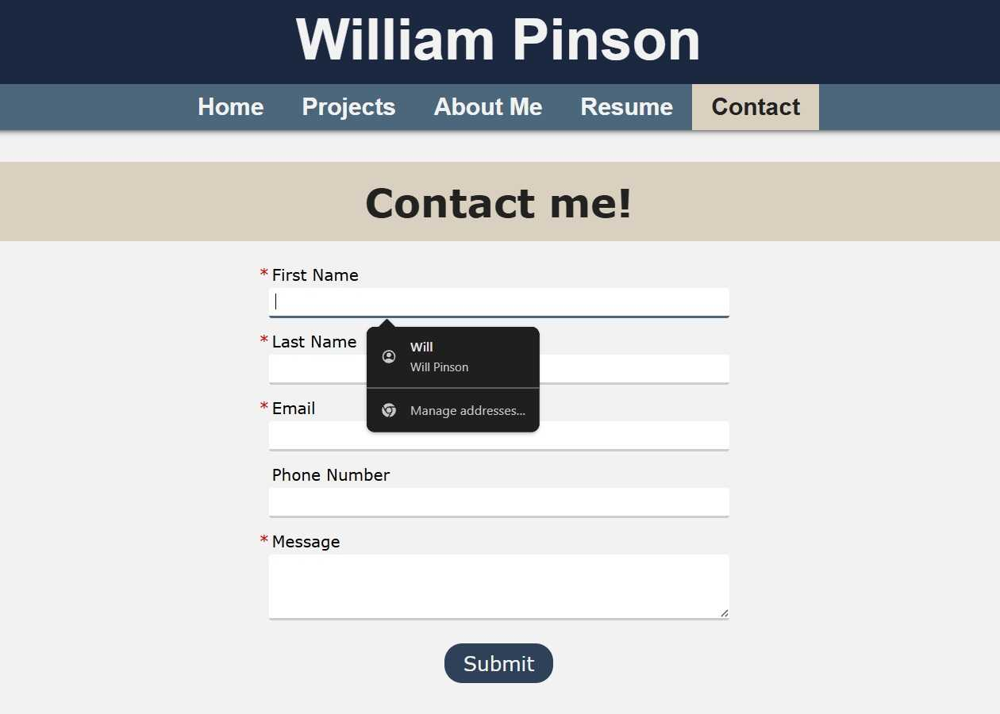
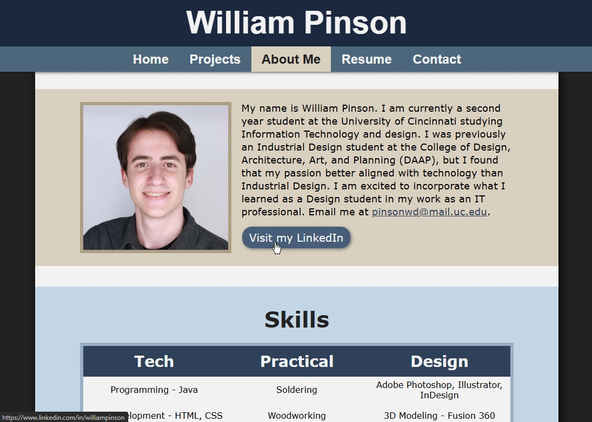

Fundamentals of Web Development Final



I was tasked to make a website that would be pleasing for a user to interact with. The main goals were to have easy and clear navigation, pleasing aesthetics, and a variety of interactive elements, such as button links, a playable video, and an email link.



For this final, I put all the skills I learned in HTML and CSS on display. I decided to create a portfolio website based on my previous experience in the UC DAAP Industrial Design program. The site features three of my design projects, as well as a downloadable resume, and other features. It also includes reactive features, such as flexibility for different screen sizes, and accessibility features, upholding the four tenants of POUR: Perceivable, Operable, Understandable, and Robust. Visit the site here!